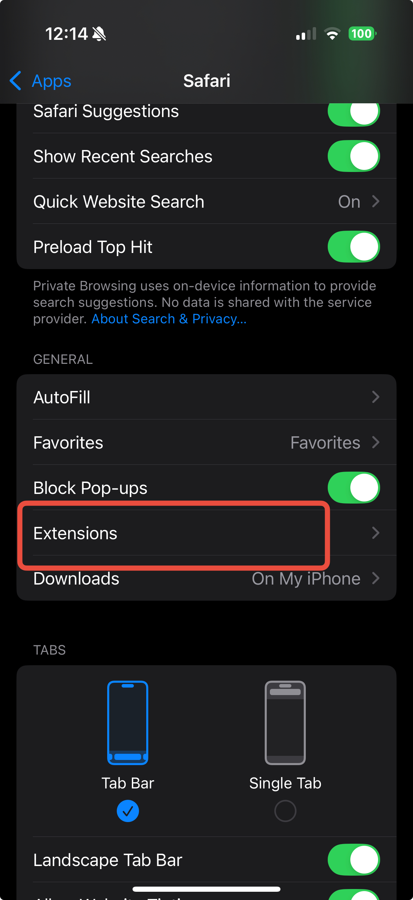
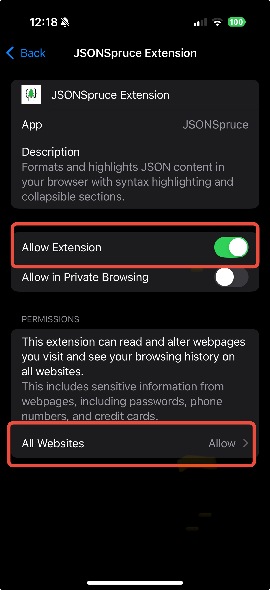

Format and highlight JSON content in Safari with syntax highlighting and collapsible sections.
To enable this extension:
- Open the Settings app
- Go to Safari
-
Tap Extensions

-
Tap on JSONSpruce Extension

- Toggle "Allow Extension" ON
- Set "All Websites" to Allow